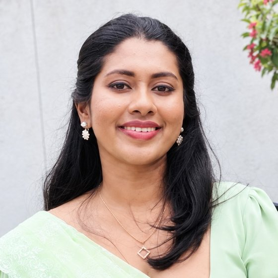

Sanduni Wijesinghe
Senior Site Reliability Engineer. I keep large-scale cloud platforms on Azure and Kubernetes fast, observable and available for customers around the world.
Based in Gampaha, Sri Lanka
About
I'm a Senior Site Reliability Engineer who works where cloud infrastructure meets the customer. I operate large-scale production environments on Azure and AKS for customers around the world, and I'm a senior escalation point when something goes wrong.
My work runs from the first alert to the last corrective action. I troubleshoot Kubernetes workloads layer by layer, run blameless post-incident reviews, and turn what we learn into better monitoring, runbooks and automation, so the same problem doesn't come back.
Alongside the engineering I completed an MBA. My research looked at how company policy and culture can help keep women in shift-based technical roles in IT. I care about reliable systems and about building teams where people can do their best work over the long run. I'm currently studying for an MSc in Enterprise Applications Development at SLIIT.
Outside work I build tools that come out of real on-call problems, and I write. On Medium I write about being a woman in 24/7 SRE work and explain AI for beginners.
Experience
Projects
Skills and tools
Education
Certifications
Let's talk
I'm always glad to talk about reliability engineering, cloud operations, writing or women in tech. Email me, or find me on any of these.
sanduniwwijesinghe@gmail.com
Send an email